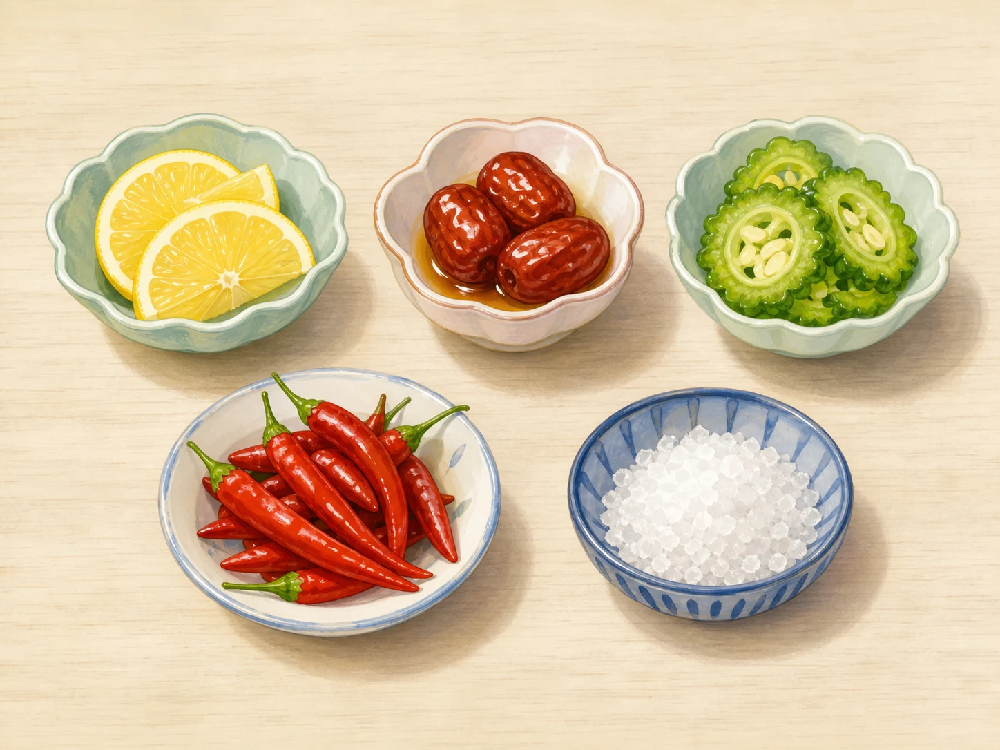
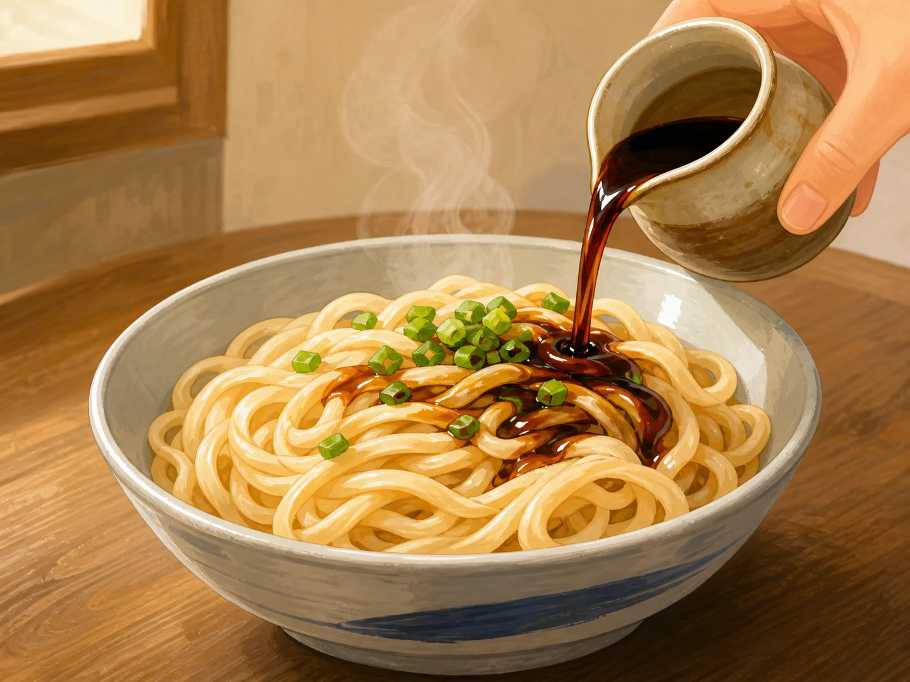
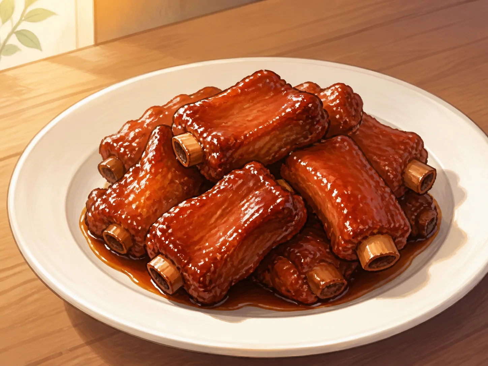
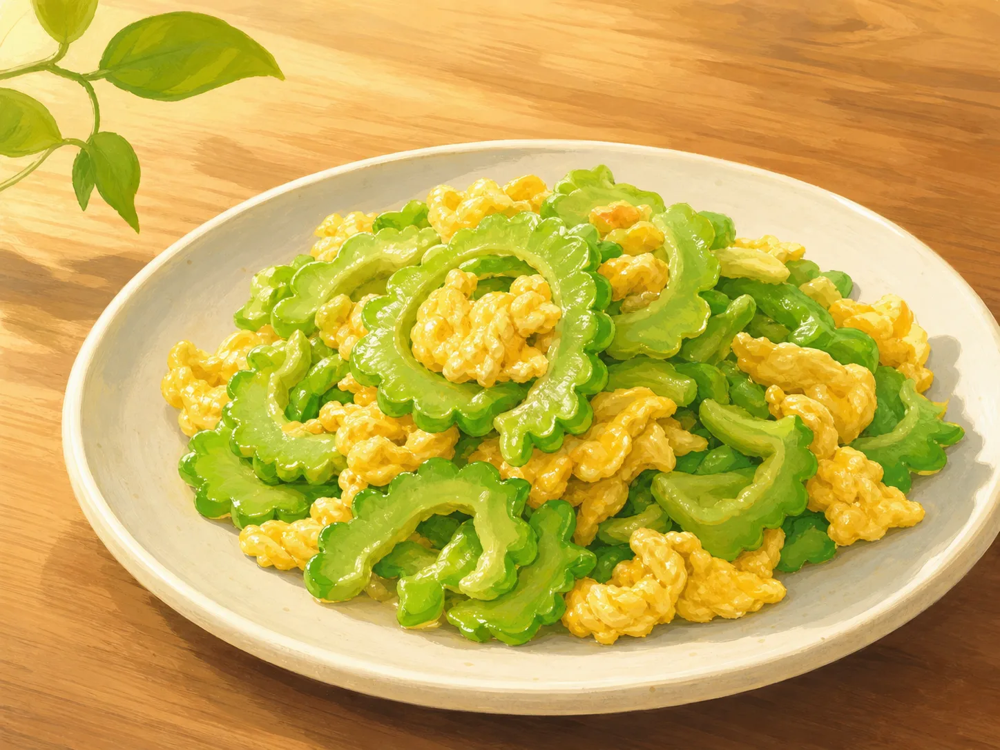
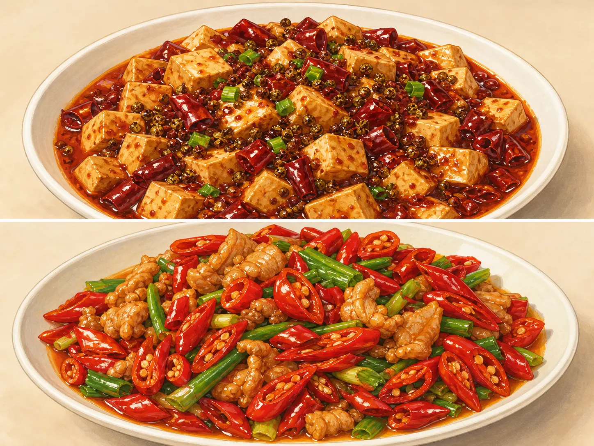

一口菜里有多少种感觉？
How Many Sensations Fit in One Bite?
阅读难度 · 中等Reading level · Medium
Page 1
五张味道卡，够不够？
Are Five Flavor Cards Enough?

This modern illustration uses foods to represent the traditional list of sour, sweet, bitter, pungent, and salty. It leaves out umami and is not a complete chart of modern taste science.
想象桌上放着五张卡：酸、甜、苦、辣、咸。旁边有几样大人准备好的熟悉食物，比如一小片水果、一小块不辣的咸饼干、一口番茄或蘑菇汤。先别急着把食物塞进五个格子里。你可以闭上眼睛闻一闻，再咬一小口，注意它是脆还是软、热还是凉，味道是立刻出现，还是咽下以后才留下来。
做这种观察时，只尝家长或老师确认安全的食物，先检查过敏原；不要直接吃大勺盐、糖或辣椒，也不要尝不认识的植物和调料。若你不喜欢某种味道，只闻、看或跳过都可以。感官探索不是勇敢比赛。
中国传统文献常用“酸、苦、甘、辛、咸”这五味来讨论食物、药物和世界怎样取得调和。“甘”常和甜有关，“辛”可以包括姜、葱、花椒等带来的刺激，不完全等于今天说的辣椒辣。这套五味是历史形成的文化与思考框架，不是一张永远不变的现代生理学表格。
Imagine five cards on a table: sour, sweet, bitter, spicy, and salty. Beside them are a few familiar foods prepared by an adult - perhaps a slice of fruit, a piece of mild salted cracker, and a spoonful of tomato or mushroom broth. Do not rush to drop each food into one box. Smell it with your eyes closed, take a small bite, and notice whether it is crisp or soft, hot or cool. Does a sensation arrive at once, or linger after you swallow?
For this kind of observation, taste only familiar foods that a parent or teacher has checked, including for allergies. Never eat spoonfuls of salt, sugar, or chili, and never sample an unknown plant or seasoning. If you dislike a food, you can smell it, look at it, or skip it. Sensory exploration is not a bravery contest.
Traditional Chinese texts often use the “five flavors” - sour, bitter, sweet, pungent, and salty - to think about food, medicine, and harmony. The older word translated as “sweet” can also mean mild or pleasant, while “pungent” may include the stimulation of ginger, scallions, or Sichuan pepper. It does not mean only chili heat. This five-flavor system is a historical cultural framework, not a timeless chart of modern physiology.
Page 2
一滴醋，改变的不只是酸度
A Drop of Vinegar Changes More Than Sourness

This modern illustration shows dark vinegar being added to hot noodles. It is one example of using vinegar, not a picture of every Shanxi noodle dish or every diner’s preference.
先看一碗热面。成人把少量醋拌进去时，你也许还没入口，就先闻到粮食发酵后形成的香气。吃进嘴里，酸味才和面条的咸味、麦香、温度与弹性一起出现。鼻子暂时被捏住时，同一口面的香气可能变弱；松开鼻子，味道好像忽然“回来”了。
这是因为“味道”和我们平常说的“风味”不完全相同。现代科学通常把甜、酸、苦、咸和鲜列为至少五种基本味觉。食物的完整风味还要加上鼻子闻到的香气、嘴里感觉到的温度和质地，有时甚至包括清凉、灼热或涩感。
山西以酿醋和面食闻名，因此醋拌面是很好的观察对象，但“山西人拿醋当水喝”只是夸张玩笑。有人喜欢浓酸，有人只加几滴，也有人不加。一个地方的招牌味道，不能替当地每个人作决定。
Begin with a bowl of hot noodles. When an adult mixes in a small amount of vinegar, you may smell the fermented-grain aroma before taking a bite. In your mouth, sourness arrives together with saltiness, the aroma of wheat, the noodles’ warmth, and their springy texture. If you briefly pinch your nose, the same bite may seem less aromatic. Release your nose, and part of the flavor appears to “come back.”
That happens because taste and what we casually call flavor are not identical. Modern science usually recognizes at least five basic tastes: sweet, sour, bitter, salty, and umami, or savory. The full flavor of food also includes aroma from the nose, temperature and texture in the mouth, and sometimes cooling, burning, or drying sensations.
Shanxi is well known for grain vinegars and noodles, so vinegar noodles make a useful example. Still, “people in Shanxi drink vinegar like water” is only a joke. One person may like a strong sour taste, another may add a few drops, and another may add none. A region’s famous flavor cannot choose for every person who lives there.
Page 3
甜和咸，会轮流出现吗？
Can Sweet and Salty Take Turns?

This modern illustration shows ribs in a glossy sauce. Recipes and sweetness vary among cooks, restaurants, and families.
再看一块裹着酱汁的无锡排骨。第一口也许先碰到表面的甜，接着尝到酱油和盐带来的咸，咀嚼时又闻到肉和香料的香气。甜与咸并没有真的排成队，它们同时存在；只是温度、浓度、咀嚼和注意力，会让你在不同时间注意到不同部分。
你可以请成人准备两小块同一种熟食，在其中一块上加一点平常会用的调味汁，然后比较：哪一块闻起来更强？哪一块的甜或咸更明显？这里要比的是感觉，不是“哪一个更高级”。糖和盐能改变风味，却不等于加得越多越好。
过去的文章常把江南写成一个人人爱甜的地方，甚至说“苏州人放糖比放盐多”。这种话把复杂的日常饮食变成了漫画。当地食材、商业、宴席与家常菜、厨师选择和家庭记忆都会影响调味；同一道菜也会有很多版本。
Now look at a Wuxi-style rib coated in sauce. The first bite may draw your attention to sweetness on the surface. Then you notice salt from soy sauce or seasoning, followed by the aroma of meat and spices as you chew. Sweet and salty are not truly waiting in a line. They are present together, but temperature, concentration, chewing, and attention can make one part stand out before another.
With an adult, compare two tiny pieces of the same familiar cooked food, adding a little everyday sauce to one. Which smells stronger? Which seems sweeter or saltier? The goal is to compare sensations, not decide which version is “better.” Sugar and salt can reshape flavor, but more is not automatically better.
Older descriptions sometimes turn Jiangnan into a place where everyone loves sweetness, even claiming that Suzhou cooks use more sugar than salt. That makes a complex food culture into a cartoon. Local ingredients, commerce, banquet cooking, home cooking, a chef’s choices, and family memories all affect seasoning. Even one named dish can have many versions.
Page 4
苦味一定是坏味道吗？
Is Bitter Always a Bad Taste?

This modern illustration shows bitter melon with egg. Bitterness and preparation vary, and it is normal to like the dish - or not.
苦瓜炒蛋把两种很不一样的感觉放在一起：苦瓜脆中带苦，鸡蛋柔软，还有油脂的香气。有人第一次尝就皱眉，有人长大以后才喜欢，也有人一直不喜欢。味觉会受到经验和习惯影响，但没有一道菜是每个人“长大后就必须喜欢”的。
在中国历史上，食物与药物的界线有时会互相靠近，传统医药也用五味来整理药材的性质。因此，苦瓜、苦味草本饮品等常被放进“苦味也有用”的文化故事里。了解这种观念，可以帮助我们读懂历史，却不能把一道苦菜当成给所有人治病的处方。
如果要观察苦味，用成人确认安全、你以前吃过的一小块苦瓜就够了。不要因为“苦”就猜一种野草能吃，也不要把不明草药当饮料。苦味有时能提醒身体注意潜在危险；它也是一种可以被厨师搭配、减弱或保留的感受。
Bitter melon with egg brings together very different sensations. The melon is crisp and bitter; the egg is soft, with the aroma and mouthfeel of cooking oil. One person may frown at the first bite, another may learn to enjoy it later, and someone else may never like it. Experience can change taste preferences, but no food becomes something everyone “must like when they grow up.”
In Chinese history, the boundaries between food and medicine have sometimes overlapped, and traditional medicine also used the five flavors to organize ideas about medicinal materials. That is why bitter melon and bitter herbal drinks often appear in cultural stories about bitterness having a purpose. Learning this helps us understand history, but it does not turn one bitter dish into a medical treatment for everyone.
To observe bitterness, a tiny piece of a familiar bitter melon dish checked by an adult is enough. Never assume that a wild plant is edible because it tastes bitter, and never drink an unknown herbal mixture. Bitterness can sometimes warn the body about possible danger. It is also a sensation that cooks may balance, soften, or deliberately keep.
Page 5
辣椒给神经出的“热题”
Chili Gives Your Nerves a “Heat Puzzle”

This modern composite uses chilies, Sichuan pepper, and different dishes to suggest two familiar flavor ideas. It is not a complete border map of Sichuan and Hunan cooking.
辣椒入口时，舌头并没有真的被火烧到。辣椒素会启动与热和疼痛有关的感觉通路，其中包括三叉神经传递的信号，所以大脑收到“灼热”的消息。现代感官科学通常不把辣列作基本味觉。花椒带来的“麻”也不同于辣，它会产生刺麻、颤动一样的感觉；在麻辣菜里，辣、麻、咸、鲜、香和温度可以同时出现。
更令人意外的是，古代中国很长时间没有辣椒。辣椒原产美洲，15世纪末以后才随着全球航路传到旧大陆；目前所知，中国文献在1591年已经记录它，后来它才逐渐进入不同地区的种植和烹饪。在这之前，人们也会用姜、芥、花椒等制造“辛”或刺激感，但那不是辣椒素带来的同一种感觉。
今天四川与湖南都有许多辣菜，可是“川菜只麻嘴、湘菜只辣喉咙”仍然太简单。两地内部都有不辣或不同辣法的菜，厨师和食客也会调整辣度。若想观察辣感，可以看成人切开的辣椒、闻菜的香气，或尝自己已经熟悉的微辣食物；不要摸完辣椒再碰眼睛，也不必为了证明勇敢去挑战强辣。
When chili touches your mouth, your tongue is not literally on fire. Capsaicin activates sensory pathways connected to heat and pain, including signals carried by the trigeminal nerve, so the brain receives a message of burning. Modern sensory science does not usually classify spicy heat as a basic taste. The ma of Sichuan pepper is different again, producing a prickling or buzzing sensation. In a mala dish, heat, tingling, saltiness, umami, aroma, and temperature can all arrive together.
More surprisingly, China went through most of its ancient history without chili peppers. Chilies are native to the Americas and reached the Old World through global trade after the late fifteenth century. The earliest known clear Chinese written record dates to 1591, and chilies only gradually entered farming and cooking in different regions. Earlier cooks could create pungency with ginger, mustard, and Sichuan pepper, but those ingredients do not produce the same capsaicin burn.
Many dishes in Sichuan and Hunan are spicy today, yet “Sichuan numbs the lips while Hunan burns the throat” is still too simple. Both places contain many dishes, degrees of heat, and individual choices. To observe chili safely, you can look at one cut open by an adult, smell a prepared dish, or taste a mildly spicy food you already know. Never touch your eyes after handling chili, and never treat extreme heat as a test of courage.
Page 6
鲜味在哪里？地图口诀可靠吗？
Where Is Umami - and Can a Food Rhyme Map China?

This modern illustration shows a simplified bowl of yanduxian. Ingredients vary by household and season, so the picture is not a recipe.
最后尝一口成人准备的番茄汤、蘑菇汤，或像腌笃鲜这样用肉和笋炖出的汤。那种饱满、鲜香、像高汤一样的感觉，常被称为“鲜味”。现代味觉科学把鲜列为基本味觉之一，它与食物中的谷氨酸等物质有关。腌笃鲜里还可能同时有咸味、肉香、笋的脆嫩和热汤的温度，所以“鲜”仍然不是整碗汤的全部。
有人用“南甜北咸东辣西酸”给中国画味觉地图。它顺口，却经不起认真追问：四川和湖南常被认为爱辣，却不在“东”；山西以醋闻名，却不在“西”的最边缘；同一座城里也有来自各地的餐馆和家庭。研究区域菜谱的学者发现，邻近地区的菜可能更相似，但气候并不能单独解释一切。
味道会跟着本地食材、保存方法、贸易路线和人口迁徙移动，也会受到价格、阶层、餐馆潮流与家庭选择影响。现在再看桌上的五张卡，你会发现一口菜根本放不进一个格子。传统五味帮助我们理解一种历史思路，现代科学帮助我们拆开感觉的来源，而真正的吃饭经验，还要把味觉、香气、温度、质地和记忆重新放在一起。
For the last sample, try a small spoonful of tomato or mushroom broth prepared by an adult, or a soup such as yanduxian, often simmered with fresh and salted pork and bamboo shoots. Its deep, broth-like savoriness is called umami. Modern taste science recognizes umami as a basic taste linked to substances such as glutamate. The soup may also be salty, meaty-smelling, hot, and full of crisp bamboo shoots, so umami is still not the whole experience.
A popular rhyme draws a flavor map of China: “sweet in the south, salty in the north, spicy in the east, sour in the west.” It is catchy but falls apart under questions. Sichuan and Hunan are famous for many spicy dishes, yet neither fits neatly into “the east.” Shanxi is known for vinegar, but it is not at China’s far western edge. One city can also contain restaurants and families with roots in many places. Researchers comparing regional recipes found that neighboring cuisines can resemble one another, but climate alone does not explain everything.
Flavor travels with local ingredients, preservation methods, trade routes, and migration. It is also shaped by prices, social class, restaurant fashions, and family choices. Look at the five cards again and one bite will no longer fit into a single box. The traditional five flavors help us understand a historical way of thinking. Modern science helps us separate sources of sensation. Real eating brings taste, aroma, temperature, texture, and memory back together.
下一口，问得更仔细
Ask a Better Question with the Next Bite
“这是酸的还是甜的？”是一个好问题，却不是最后一个问题。下一口还可以问：我闻到了什么？它为什么发麻或发热？口感怎样？这种食材什么时候来到这里？谁教会了这家人这样做？
一口菜不是地图上的一个颜色，也不是科学表格里的一个格子。它是身体的感觉、历史的移动和个人选择在同一刻相遇。会认真品尝，不是把所有味道说对，而是愿意慢下来，发现一个简单答案装不下的细节。
“Is this sour or sweet?” is a good question, but it is not the last one. With the next bite, you can also ask: What do I smell? Why does this tingle or burn? What is the texture? When did this ingredient arrive here? Who taught this family to prepare it this way?
A bite of food is neither one color on a map nor one box in a science chart. It is a meeting of body sensations, moving history, and personal choice. Careful tasting does not mean naming every flavor correctly. It means slowing down long enough to notice the details that no simple answer can hold.